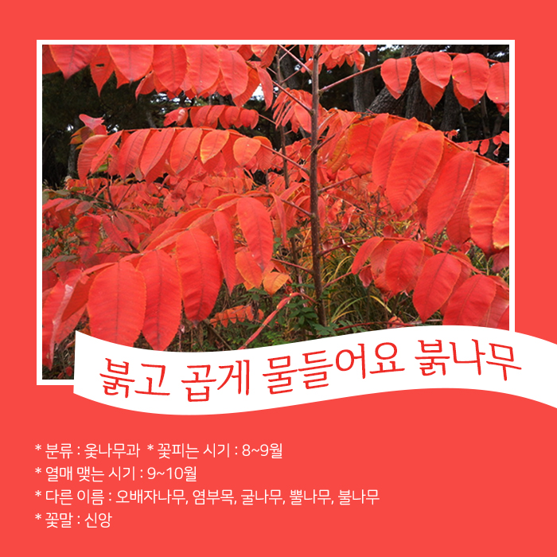
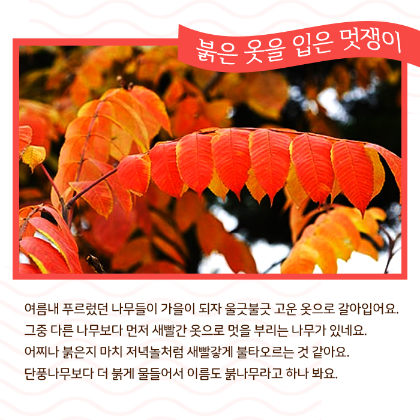
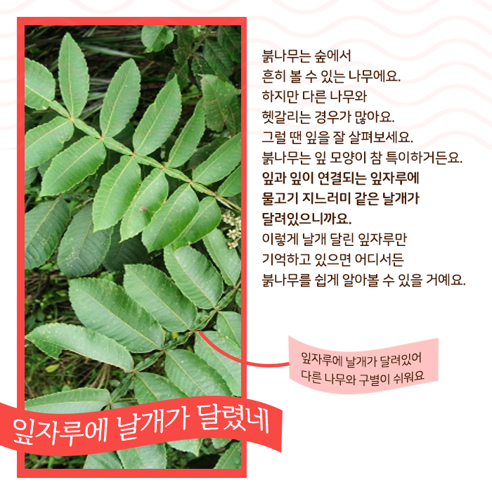
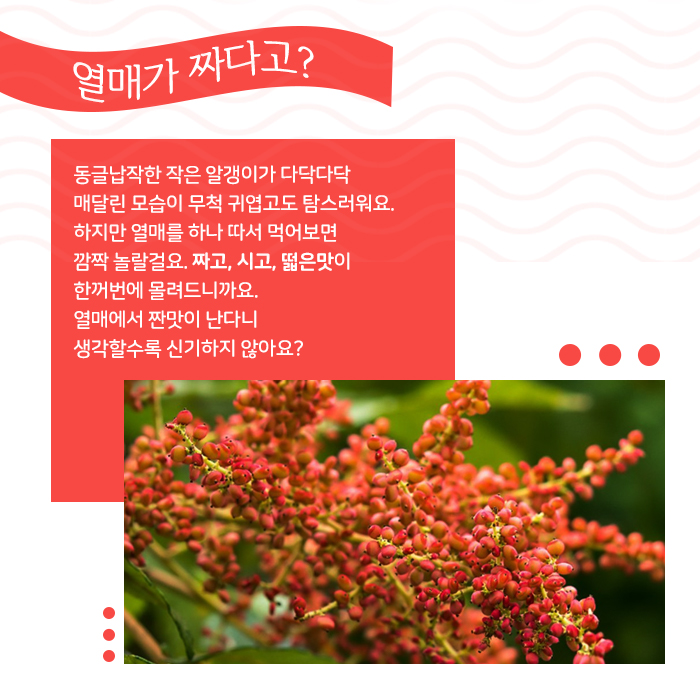
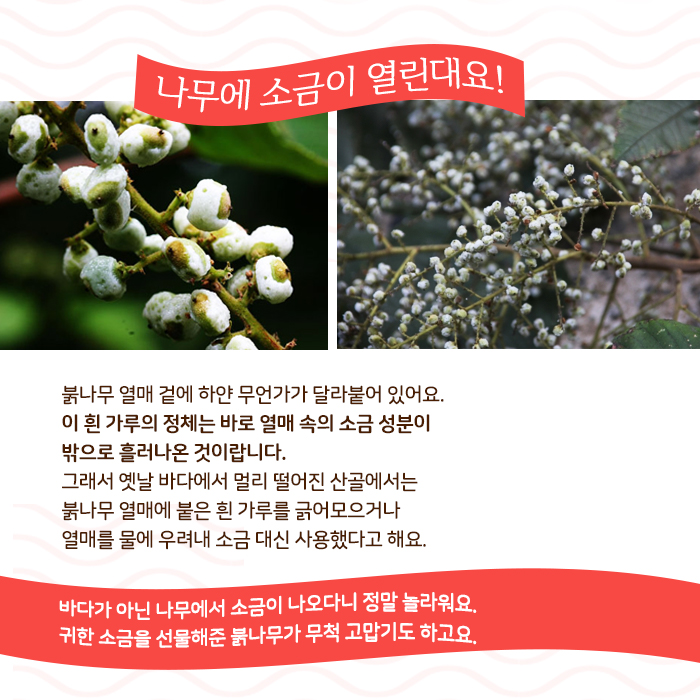
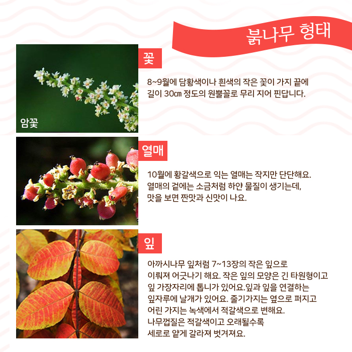
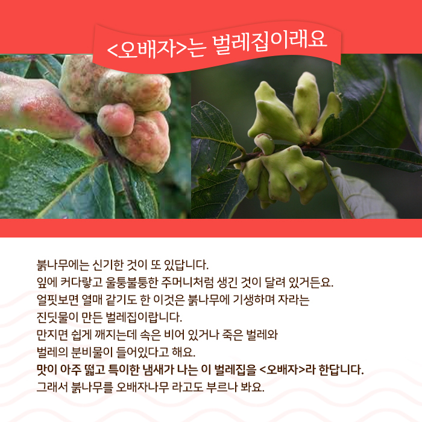
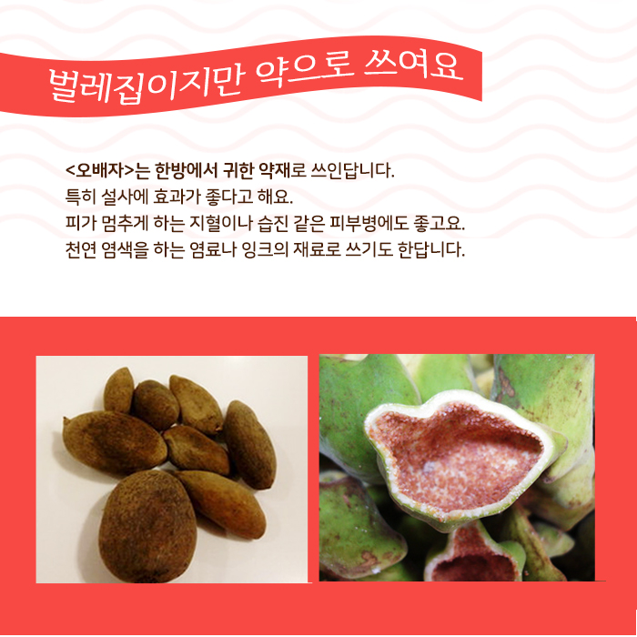

<!DOCTYPE html>
<html lang="en">
    <head>
        <meta charset="utf-8">
        <meta name="viewport" content="width=device-width,initial-scale=1.0,minimum-scale=1.0,maximum-scale=1.0,user-scalable=no">
        <title>붉나무</title>
		<link type="text/css" rel="stylesheet" href="js/cardnews.css">
        <script src="https://ajax.googleapis.com/ajax/libs/jquery/2.2.4/jquery.js"></script>
        <script src="js/galleria-1.5.7.js"></script>
    </head>
<body>
    <div class="content">
        <div id="fullscreen"></div>
        <div id="galleria">
            
            
            
            
            
            
            
            
        </div>
        <div class="description">
            <h2>붉고 곱게 물들어요 붉나무 </h2>
                <p>* 분류 : 옻나무과</p>
                <p>* 꽃피는 시기 : 8~9월</p>
                <p>* 열매 맺는 시기 : 9~10월</p>
                <p>* 다른 이름 : 오배자나무, 염부목, 굴나무, 뿔나무, 불나무</p>
                <p>* 꽃말 : 신앙</p>
            <h3>붉은 옷을 입은 멋쟁이 </h3>
                <p>여름내 푸르렀던 나무들이 가을이 되자
                    울긋불긋 고운 옷으로 갈아입어요.
                    그중 다른 나무보다 먼저 새빨간 옷으로
                    멋을 부리는 나무가 있어요.
                    어찌나 붉은지 마치 저녁놀처럼
                    새빨갛게 불타오르는 것 같아요.
                    단풍나무보다 더 붉게 물들어서
                    이름도 붉나무라고 하나 봐요.</p>
            <h3>잎자루에 날개가 달렸네</h3>
                <p>숲에서 흔히 볼 수 있는 붉나무는 잎 모양이 참 특이해요.
                    잎과 잎이 연결되는 잎자루에 
                    물고기 지느러미 같은 날개가  달려있으니까요.
                    이렇게 날개 달린 잎자루만  기억하고 있으면 어디서든 
                    붉나무를 쉽게 알아볼 수 있을 거예요.</p>
                <p>사진설명) 잎자루에 날개가 달려있어 다른 나무와 구별이 쉬워요</p>
            <h3>열매가 짜다고?</h3>
                <p>동글납작한 작은 알갱이가 다닥다닥 
                    매달린 모습이 무척 귀엽고도 탐스러워요. 
                    하지만 열매를 하나 따서 먹어보면
                    깜짝 놀랄걸요. 짜고, 시고, 떫은맛이 
                    한꺼번에 몰려드니까요. 
                    열매에서 짠맛이 난다니 
                    생각할수록 신기하지 않아요?</p>
            <h3>나무에 소금이 열린대요!</h3>
                <p>붉나무 열매 겉에 하얀 무언가가 달라붙어 있어요.이 흰 가루의 정체는 바로 열매 속의 소금 성분이
                    밖으로 흘러나온 것이랍니다.
                    그래서 옛날 산골에서는
                    붉나무 열매에 붙은 흰 가루를 긁어모으거나
                    열매를 물에 우려내 소금 대신 사용했대요.</p>
                <p>바다가 아닌 나무에서 소금이 나오다니 정말 놀라워요.
                    귀한 소금을 선물해준 붉나무가 무척 고맙기도 하고요.</p>
            <h3>붉나무 형태</h3>
                <p>꽃 - 8~9월에 담황색이나 흰색의
                    작은 꽃이 가지 끝에 
                    길이 30㎝ 정도의 원뿔꼴로
                    무리 지어 핀답니다.</p>
                <p>사진설명) 암꽃 수꽃</p>
                <p>잎 - 아까시나무 잎처럼 7~13장의
                    작은 잎으로  이뤄져 어긋나기 해요.
                    작은 잎의 모양은 긴 타원형이고 
                    잎 가장자리에 톱니가 있어요.
                    </p>
                <p>열매 - 10월에 황갈색으로 익는
                    열매는 작지만 단단해요.
                    열매의 겉에는 소금처럼
                    하얀 물질이 생기는데,
                    맛을 보면 짠맛과 신맛이 나요.</p>
            <h3><오배자>는 벌레집이래요</h3>
                <p>잎에는 커다랗고 울퉁불퉁한 주머니처럼 생긴 것이
                    달려 있어요.
                    열매 같기도 한 이것은 붉나무에 기생하며 자라는
                    진딧물이 만든 벌레집입니다.
                    만지면 쉽게 깨지는데 속은 비어 있거나 죽은 벌레와 
                    벌레의 분비물이 들어있어요.
                    맛이 아주 떫고 특이한 냄새가 나는 이 벌레집을
                    <오배자>라 한답니다.
                    그래서 붉나무를 오배자 나무 라고 부르기도 해요.</p>
            <h3>벌레집이지만 약으로 쓰여요</h3>
                <p><오배자>는 한방에서 귀한 약재로 쓰여요.
                    특히 설사에 효과가 좋답니다.
                    피가 멈추게 하는 지혈이나 습진 같은 피부병에도 좋고요.
                    천연 염색을 하는 염료나 잉크의 재료로 쓰기도 한답니다.</p>
                    <p>참고자료 - 생물자원정보, 자생식물종자(한국과학기술정보연구원) - 수목도감(나무세계) - 우리 동네 숲에는 무엇이 살까?(손옥희 외2인, 청어람미디어) </p>
        </div>
    </div>

    <script src="js/cardnews.js"></script>
    </body>
</html>